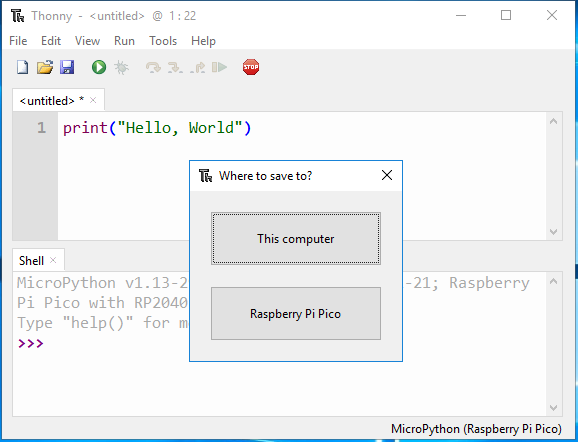

Your First MicroPython Program¶
In MicroPython, there are two options/methods for running code:
The interactive mode involves running your codes directly on the Python shell which can be accessed from the terminal of the operating system. In the script mode, you have to create a file, save it a name with a .py the extension then runs your code. The interactive mode is suitable when running a few lines of code. The script mode is recommended when you need to create large applications and save them for the next use.
Interactive Mode¶
Interactive mode, also known as the REPL provides us with a quick way of running blocks or a single line of Python code. The code executes via the Python shell, which comes with Python installation. Interactive mode is handy when you just want to execute basic Python commands or you are new to Python programming and just want to get your hands dirty with this beautiful language.
点击Python Shell区域，在>>>之后输入以下指令，然后点击Enter.
print(“Hello, World!”)

Note
如果您的程序不运行，而是打印一个“语法错误”消息到Shell区域，那么在您所写的内容中有一个错误。 MicroPython需要以一种非常具体的方式编写它的指令：错过括号或引号，拼写“打印”错误，或者给它一个大写P，或者在指令中的某个地方添加额外的符号，它就不会运行。 再次尝试键入该指令，并确保它与本书中的版本匹配，然后按Enter键。
您将会发现在Shell区域将会立即打印出信息“hello world”。
Script Mode¶
If you need to write a long piece of Python code or your Python script spans multiple files, interactive mode is not recommended. Script mode is the way to go in such cases. In script mode, You write your code in a text file then save it with a .py extension which stands for “Python”.
在script area输入同样的指令“print(“Hello, World!”)”，当你按下ENTER键之后，程序不会运行，只会在script area区域多一行空行。

You need click “Run Current Script” or simply press F5 to run it. 如果你的代码没有保存过，将会弹出一个窗口询问保存到This computer or Raspberry Pi Pico？

Note
当您告诉Thonny将您的程序保存在Raspberry Pi Pico上，这意味着程序存储在Pico本身上。 如果你拔掉你的Pico，把它带到你朋友的家里，一个学校活动，或者一个编码俱乐部，然后把它插入他们的电脑中，你的程序仍然是你保存它们的地方-就在你自己的Pico上。
选择你要存储的位置，然后输入文件名hello_world及拓展名’.py’，然后点击OK。

Note
你可以将你的代码保存成任意的名字，但是最好能描述这是一个怎样的代码，不要命名成无意义的名字如abc.py等。 需要特别注意的是，如果你将代码文件名保存成 “main.py” ，那么它将会在通电的时候自动运行。
当你的程序保存后，将会自动运行，你将看到2行信息在Shell区域
>>> %Run -c $EDITOR_CONTENT
Hello, World!
The first of these lines is an instruction from Thonny telling the MicroPython interpreter on your Pico to run the contents of the script area – the‘EDITOR_CONTENT’. The second is the output of the program – the message you told MicroPython to print.
在Script mode下，你要再次打开以前保存过的代码也是一件很简单的事情, 但Interactive Mode中输入的代码将不会被保存，只能重新输入。 点击打开图标在Thonny工具栏，就像你保存程序时，你会被问到你是想把它保存到“This Computer”还是“Raspberry Pi Pico”-例如点击“Raspberry Pi Pico”，你会看到你保存到你的Pico的所有程序的列表。 在列表中找到hello_world.py-如果您的Pico是新的，它将是那里唯一的文件-然后单击它选择它，然后单击OK。 您的程序将加载到Thonny，准备编辑或为您再次运行它。